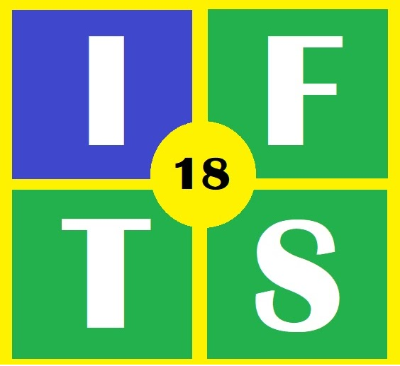

Instituto de Formación Técnica Superior N° 18
Técnico Superior en Desarrollo de Software (TSDS)
Asignatura: Programación sobre Redes
Profesor: Lucas Rusatti
Trabajo Práctico de Investigación
Programación sobre Redes
Alumnos:
Maryangelin Quintero
Martín Esperón
Leonardo Buján
Los invitamos a explorar la Programación de Redes con una web interactiva
En el menú de la izquierda vas a encontrar distintas temáticas para aprender
Haz click sobre las imagenes en cada página para ver el contenido